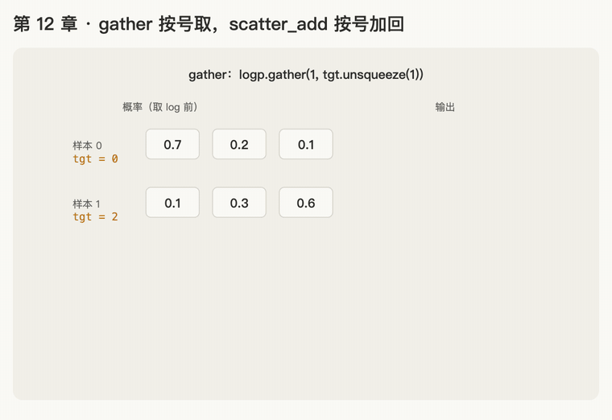

第 12 章 · 索引与散射：按掩码挑、按下标取、按下标写回
本章回答：attention 里的 mask 怎么"遮"？
torch.where为什么比 Python 的if好？gather和scatter_add各在什么场景用（取目标类的概率、MoE 合并专家输出）？topk返回什么？
讲解日期：2026-11-14 · 上一章：第 11 章 形状与广播 · 下一章：第 13 章 规约与矩阵乘
对应原文：00-overview.md §4.3；官方文档torch.gather/Tensor.scatter_add_/torch.where（〔在线〕）；Transformer 讲义 第 17 章 因果 mask；本章输出在本机 torch 2.15.0 上跑过本章缩写：MoE = Mixture of Experts（混合 / 专家：每个 token 只送给少数几个"专家"子网络）；idx = index（下标）；全部缩写见 附录 · 缩写与术语表
讲解
第一步：mask——给不能看的位置填 −∞（2026-11-14）
mask（掩码） = 一个和数据同形状的真 / 假表，True 表示"保留"。最常见的用法是 attention 的因果遮挡（Transformer 第 17 章）：分数表里"不许看"的位置填成 −∞，softmax 之后就正好是 0。
s = torch.tensor([[2.0, 1.0, 0.0],
[0.5, 3.0, 1.0]])
keep = torch.tensor([[True, False, False],
[True, True, False]])
s.masked_fill(~keep, float("-inf")).softmax(-1)
# tensor([[1.0000, 0.0000, 0.0000],
# [0.0759, 0.9241, 0.0000]])
第 2 行只剩 0.5 和 3.0 参与：\(\frac{e^{0.5}}{e^{0.5} + e^{3}} = \frac{1.65}{1.65 + 20.09} = 0.0759\) ✓。~ 是取反（True ↔ False）。
一句话：mask 是同形状的真假表；masked_fill(~keep, -inf) 再 softmax，被遮的位置权重正好为 0。
第二步：torch.where——三选一，替代 Python if（2026-11-14）
torch.where(cond, a, b)：逐个元素看条件，真取 a、假取 b。
x = torch.tensor([-2.0, 1.0, 3.0])
torch.where(x > 0, x, 0.1 * x) # tensor([-0.2000, 1.0000, 3.0000]) ← 这就是 LeakyReLU
为什么不写 Python 的 if？if x > 0 只能对一个数做判断，而且要把数拿回 CPU（第 5 章同步点），在 torch.compile 里还会断图（第 6 章）。where 对整个张量一次算完，全在 GPU 上，编译器也能融合。代价是 a、b 两边都要算。
布尔索引的区别：x[x > 0] 返回 tensor([1., 3.])，只有 2 个元素：输出大小取决于数据。这类操作（还有 nonzero、unique）要先知道有几个 True 才能分配结果，是同步点，也让编译器难办。能用 where / masked_fill 保持形状不变的，就别用布尔索引。
一句话：where 逐元素三选一、形状不变、不同步；布尔索引结果长度看数据，慢且难编译。
第三步：gather——每行按自己的下标取一个（2026-11-14）
类比：点名领卷子。 每个学生（行）手里有一张号码条（下标），去自己那一排的第几号位置拿东西。
最典型的场景：取出每个样本正确类别的 log 概率（算交叉熵 loss 就是这一步，第 15 章）。
logp = torch.log(torch.tensor([[0.7, 0.2, 0.1], # 样本 0 的三类概率
[0.1, 0.3, 0.6]])) # 样本 1
tgt = torch.tensor([0, 2]) # 样本 0 答案是类 0，样本 1 是类 2
logp.gather(1, tgt.unsqueeze(1)).squeeze(1)
# tensor([-0.3567, -0.5108]) ← log 0.7 和 log 0.6
规则：out[i][j] = input[i][ index[i][j] ]（dim=1 时）。index 要和输出同形状，所以要先 unsqueeze(1) 变成 (2, 1)，取完再 squeeze。
同类函数：take_along_dim（同样的事，参数更直观）、index_select（所有行用同一组下标）。
一句话：gather 让每行按自己的下标取值；out[i][j] = input[i][index[i][j]]。
第四步：scatter_add——按下标往回加（2026-11-14）
gather 的反方向：拿着一串值，按下标加到目标位置上，同一个位置可以被加好几次。
out = torch.zeros(3)
idx = torch.tensor([0, 2, 0, 1])
src = torch.tensor([1., 2., 3., 4.])
out.scatter_add(0, idx, src) # tensor([4., 4., 2.])
位置 0 收到第 1 个和第 3 个值：1 + 3 = 4；位置 1 收到 4；位置 2 收到 2。index_add(0, idx, src) 结果一样，写法更顺。
场景：MoE 合并专家输出。4 个 token 被路由到不同专家算完，结果要按 token 编号加回原来的位置（一个 token 若去了 2 个专家，两份结果按权重加起来）——就是 index_add / scatter_add。再比如：统计每个类别出现几次（bincount 也是它的特例）、图神经网络把邻居消息加到节点上。
注意：scatter_（不带 add）是"写入"，同一位置写多次时谁最后写算谁，GPU 上顺序不确定。要累加一定用 _add 版。
一句话：scatter_add 按下标把值加回去，同一位置可累加；MoE 合并、计数都用它；不带 add 的重复写顺序不定。
第五步：topk——前 k 大的值和位置（2026-11-14）
v, i = torch.tensor([0.1, 0.5, 0.2, 0.9]).topk(2)
v, i # (tensor([0.9000, 0.5000]), tensor([3, 1]))
返回值和下标两样。MoE 路由：每个 token 对所有专家打分，topk(2) 选出分最高的 2 个专家（下标）和对应的权重（值）；采样时的 top-k 采样也是它。下标接着交给第三、四步的 gather / scatter 去取数和写回。
一句话：topk 同时给值和下标，下标再交给 gather / scatter 用。
动画演示：gather 与 scatter_add

可交互版：animations/12-gather-scatter.html。按钮切换 gather / scatter_add。
怎么看：
- gather：两行概率表，每行按自己的目标下标画一条线取出一个数；
- scatter_add：四个值按下标落到三个格子里，格子 0 被加了两次，数字逐步累加；
- 每一步下方写出对应的下标公式。
练习与作答记录
题 1：分数 [[1.0, 2.0, 3.0]]，mask [[True, True, False]]。masked_fill(~mask, -inf).softmax(-1) 的结果是多少？（\(e^1 ≈ 2.72\)，\(e^2 ≈ 7.39\)）
作答：（待作答）
题 2：out = torch.zeros(4)，idx = [3, 1, 3, 3]，src = [1., 2., 3., 4.]。out.scatter_add(0, idx, src) 是多少？
作答：（待作答）
题 3：x[x > 0] 和 torch.where(x > 0, x, 0) 输出有什么不同？为什么后者对 GPU 和 torch.compile 更友好？
作答：（待作答）
口诀
mask 填负无穷，softmax 后正好是零；
where 三选一形状不变，布尔索引长度看数据；
gather 按号取，scatter_add 按号加回，topk 给值又给号。
本章复习卡片
- P37（masked_fill(~keep, -inf) + softmax；[0.5, 3.0] → 0.0759 / 0.9241）
- P38（where vs 布尔索引：形状不变 / 同步与断图）
- P39（gather 公式
out[i][j] = input[i][index[i][j]]；取目标类 log 概率） - P40（scatter_add / index_add：[0, 2, 0, 1] + [1, 2, 3, 4] → [4, 4, 2]；scatter_ 重复写顺序不定；topk 返回值和下标）
附录 · 延伸阅读
推荐阅读
| 读什么 | 读哪里 | 读它为了什么 |
|---|---|---|
★ 官方文档 torch.gather、Tensor.scatter_add_ |
公式部分（〔在线〕） | 三维情况下各个 dim 怎么对应 |
| ★ Transformer 讲义 | 第 17 章 因果 mask | 为什么填 −∞ 而不是 0 |
| Shazeer et al. 2017「Outrageously Large Neural Networks」 | §2 Sparsely-Gated MoE（〔在线〕arXiv:1701.06538） | topk 路由 + 加权合并的出处 |
| 官方文档 Reproducibility | "Avoiding nondeterministic algorithms"（〔在线〕） | 哪些 scatter / index 操作在 GPU 上不确定 |
数学原理
- softmax 遇到 −∞：\(e^{-\infty} = 0\)，所以被遮的项在分子分母里都消失，剩下的重新归一化。
- gather / scatter 互为转置：gather 是"按下标读"，scatter_add 是"按下标累加写"；反向传播时 gather 的梯度就是对上游梯度做 scatter_add。
公式清单
| 写法 | 意思 |
|---|---|
x.masked_fill(mask, v) |
mask 为 True 的位置填 v |
torch.where(c, a, b) |
逐元素三选一 |
x.gather(dim, idx) |
out[i][j] = x[i][idx[i][j]]（dim = 1） |
out.scatter_add(dim, idx, src) / index_add |
按下标累加 |
x.topk(k, dim) |
前 k 大的值和下标 |
代码对照：把本章的数字用代码算一遍
用 torch 把讲义里的数字跑一遍。代码在仓库本地
pytorch-deep-dive/solutions/chapter-code/ch12_index_scatter.py，配套测试tests/test_ch07_15.py；同一章的 notebook：notebooks/ch12_index_scatter.ipynb（讲解和代码放在一起，一格一格边读边跑）。Mac 上直接能跑，不需要 GPU：
bash cd pytorch-deep-dive/solutions/chapter-code uv run python ch12_index_scatter.py # 一步一步打印 uv run pytest tests/test_ch07_15.py
讲义 ↔ 代码：
| 讲义 | 公式 / 说法 | 写法 | 跑出来 |
|---|---|---|---|
| 第一步 mask | 填 −∞ 再 softmax | masked_softmax() |
第 2 行 [0.0759, 0.9241, 0] |
| 第二步 where | 逐元素三选一 | leaky_where() |
[−0.2, 1, 3]；布尔索引只剩 2 个 |
| 第三步 gather | out[i] = logp[i][tgt[i]] | gather_target_logp() |
[−0.3567, −0.5108] |
| 第四步 scatter_add | 按下标累加 | scatter_add_demo() |
[4, 4, 2] |
| 第五步 topk | 值和下标 | topk_demo() |
[0.9, 0.5]、[3, 1] |
关键几行：
s.masked_fill(~keep, float("-inf")).softmax(-1)
torch.where(x > 0, x, 0.1 * x)
logp.gather(1, tgt.unsqueeze(1)).squeeze(1)
out.scatter_add(0, idx, src)
代码里才看得到的 2 件事：
- gather 的 index 要和输出同形状：所以先
unsqueeze(1)变成 (2, 1)。 scatter_add返回新张量，scatter_add_原地改：带下划线的都是原地版本。
自己改一改（不影响练习答案）：
- 把
scatter_add_demo的 idx 改成全 0，看结果。 topk(2, largest=False)取最小的两个。